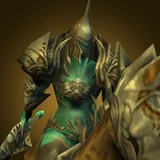

Unit
Deep Basilisk
Deep Basilisk is a tier 5 ranged unit of the Drowned and Stalker alliances, and an ace.
Deep Basilisk is a tier 5 (Legendary) ranged unit. It costs 5 gold in the shop and carries the Drowned and Stalker alliances. It is an ace.
Ability
 Basilisk Glare
Basilisk Glare
Turns all enemies within 3 cells to stone, dealing magical damage and stunning them.
- Cast
- When mana is full. Casting spends all of it.
- Cast point
- 0.3 seconds from the start of the cast to its effect.
- Targets
- All enemies within 3 cells of itself.
- Deals 150 / 250 / 400 magical damage to the targets (values per star).
- Applies Stunned (general) (cannot move, attack or cast) to the targets for 2 / 3 / 4 seconds (values per star).
Full details are on the Basilisk Glare ability page. See Mana and casting for how mana is gained.
Stats
| Stat | 1 star | 2 stars | 3 stars |
|---|---|---|---|
| Health | 1,275 | 2,550 | 5,100 |
| Attack damage | 75 to 80 | 150 to 160 | 300 to 320 |
| Seconds per attack | 1 | 1 | 1 |
| Attacks per second | 1 | 1 | 1 |
| Wind-up before the hit (seconds) | 0.3 | 0.3 | 0.3 |
| Average damage per second | 77.5 | 155 | 310 |
| Attack range (cells) | 3 | 3 | 3 |
| Armour | 5 | 5 | 5 |
| Magic resistance | 10% | 10% | 10% |
| Maximum mana | 100 | 100 | 100 |
| Move speed | 275 | 275 | 275 |
| Seconds to cross one cell | 0.47 | 0.47 | 0.47 |
| Projectile speed (cells per second) | 9.4 | 9.4 | 9.4 |
Seconds per attack is the time from the start of one attack to the start of the next, before any attack speed bonus. Average damage per second is the middle of the damage range divided by the seconds per attack, before armour, bonuses and critical strikes.
Cost, upgrades and selling
3 copies of Deep Basilisk at the same star level combine into one copy of the next star level, up to 3 stars. See Star upgrades for how combining works and Gold and income for gold.
| 1 star | 2 stars | 3 stars | |
|---|---|---|---|
| Copies needed | 1 | 3 | 9 |
| Gold to buy those copies | 5 | 15 | 45 |
| Sell value in gold | 5 | 7 | 9 |
| Copies returned to the pool when sold | 1 | 3 | 9 |
The shared pool holds 10 copies of Deep Basilisk for all players together, as it does for every tier 5 unit. See The shared pool and The shop.
Ace effect
Deep Basilisk is the ace of the Drowned alliance. Its ace effect is on while it stands on the board and at least one step of that alliance is active. See Aces.
In play, the effect applies to every allied unit:
- +75% magic resistance
When your shop rolls a tier 5 unit, each unit of that tier is weighted by the copies of it left in the pool. While that alliance is active for you, the weight of Deep Basilisk in that draw is 15% higher. See The shop.
Alliances
 Drowned race
Drowned race
Folk of the flooded undercity, slick with black water. All allies gain magic resistance.
| Units needed | Effect |
|---|---|
| 2 | All allies: +30% magic resistance. Allies summoned later in the fight get this too. |
| 4 | All allies: +55% magic resistance. Allies summoned later in the fight get this too. |
 Stalker class
Stalker class
Hunters of the ruins. Each landed attack has a chance to fire a quick volley of extra attacks at the same target.
| Units needed | Effect |
|---|---|
| 3 | When a Stalker unit lands an attack (30% chance), it launches 2 extra attacks at the unit it hit at once (these never set off more extra attacks). |
| 6 | When a Stalker unit lands an attack (38% chance), it launches 3 extra attacks at the unit it hit at once (these never set off more extra attacks). |
How units are counted towards a step is explained under How alliances count.
Fights well with
These units share an alliance with Deep Basilisk, so fielding them together works towards the same steps.


Other tier 5 units
The other tier 5 units. They cost the same and share the same tier odds. Within the tier, a unit with more copies left in the pool is offered more often, and an ace whose alliance is active for you more often still. See The shop and the Unit stat table.
 Abyssal Archon
Abyssal Archon Blood Matriarch
Blood Matriarch Cinder Wyrmrider
Cinder Wyrmrider Duskmother
Duskmother Hourblade
Hourblade Mire King
Mire King Soul Tyrant
Soul Tyrant Spire Colossus
Spire Colossus
Spire Exemplar